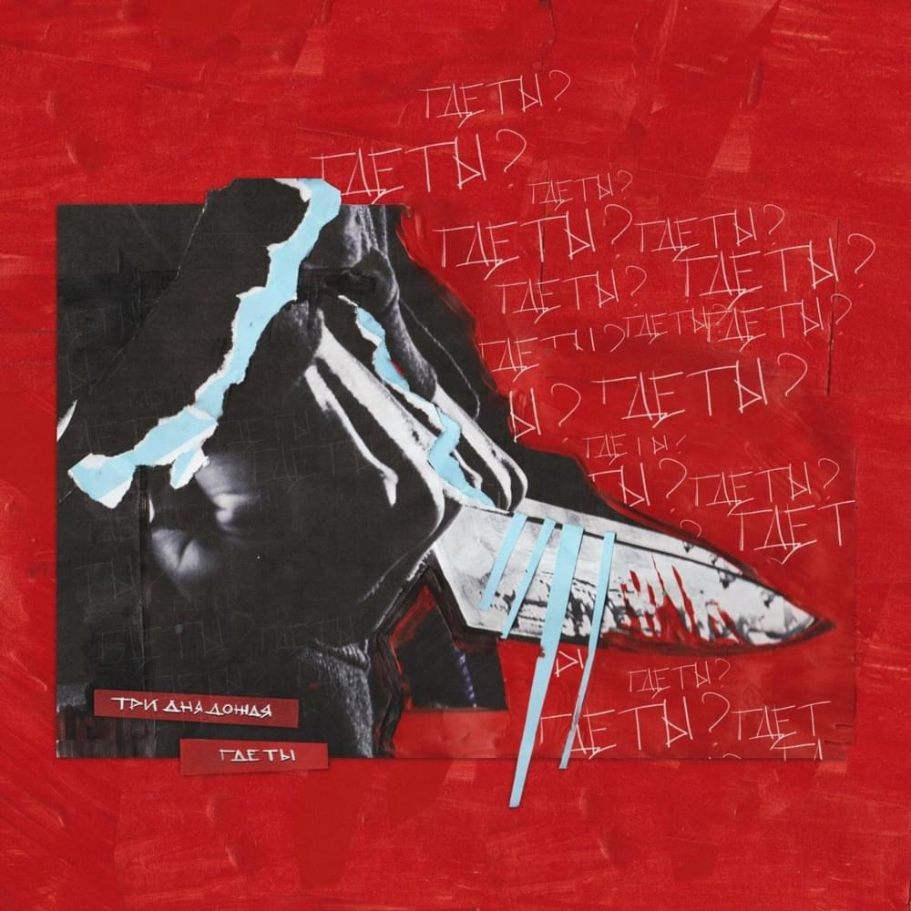
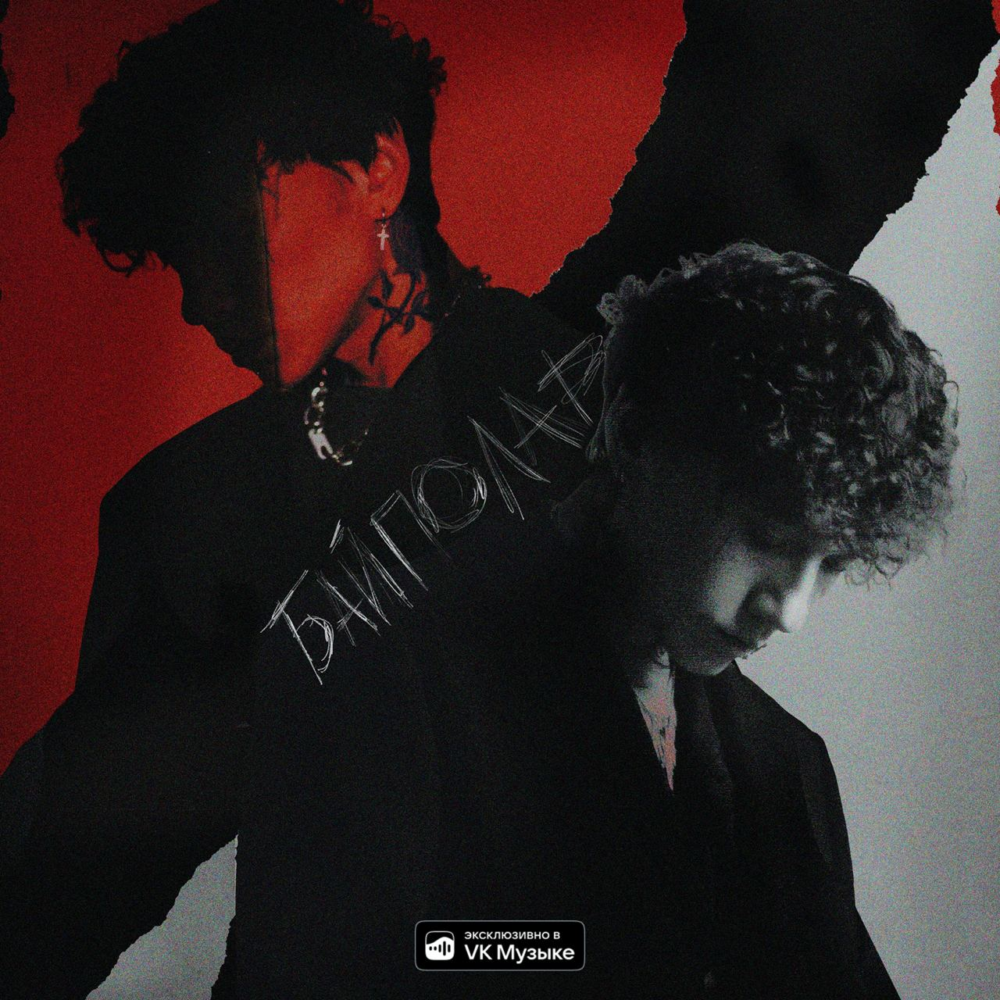
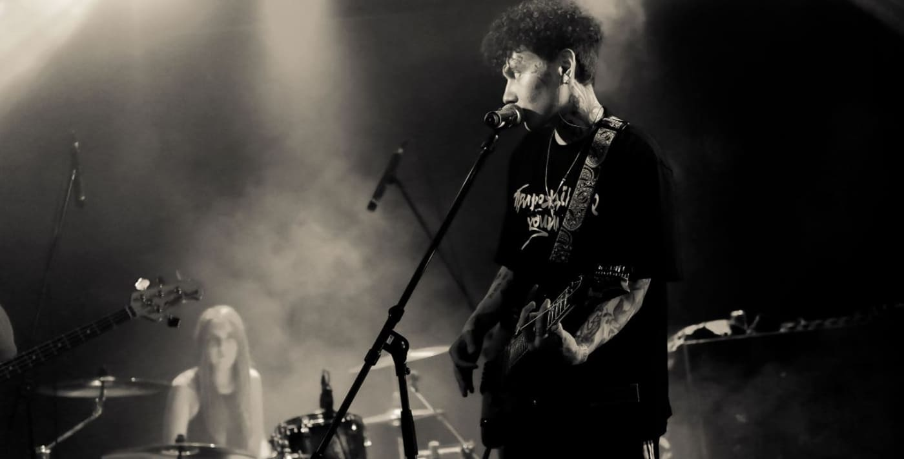

Три дня дождя – Музыкальная группа, которая была образована в 2019 году. Лицом данной группы является Глеб, он же и отвечает в группе за вокал. Музыкант сам пишет все композиции для проекта. Помимо сольных песен, он также записывает фиты с другими исполнителями, например:Мукка,Лали,Тринадцать карат,Playingtheangel и другими. Песни музыканта затрагивают понятные и знакомые многим явления. Это – вечная тема любви.
Дискография «Три дня дождя» состоит из четырех студийных альбомов, одного мини-альбома и 24 синглов. Помимо этого, имеются гостевые участия на альбомах других исполнителей в количестве 7 штук.
В 2021 году Три дня дождя были приглашены на «Вечерний Ургант» в качестве выступающих и исполняли песню «Где ты».
В 2020 году «Три дня дождя» представили первый альбом, который получил название«Любовь, аддикция и марафоны».
В 2022 году, Глеб выпустил новый альбом, который получил название «Байполар».


Данный концерт проходил 22 ноября в ночном клубе РайON (в настоящее время имеет название – Face Club). Как я уже говорила про концерт Pyrokinesis, данный клуб не подходит для проведения таких массовых концертов. Если мы сравним количество людей на двух данных мероприятиях, то на Три дня дождя зрителей было еще больше. Здесь количество людей достигало 900.
Если мы коснемся вопроса об организации концерта, то тут был только единственный минус. В силу погодных условий все люди были в верхней одежде, которую соответственно нужно было сдать в гардероб. А теперь представим в небольшой комнате около 900 человек. Естественно, была ужасная толпа, через которую невозможно пройти не в одну сторону, не в другую сторону.
Что касается самого концерта, то тут все относительно. Во-первых, очень сильно подвела аппаратура. Была прекрасно слышна музыка, играли ребята на гитарах и барабанах сами, но вот слова были почти не слышны. Чем дальше мы отходили от сцены, тем лучше был звук. Во-вторых, сам исполнитель как человек был не самым приятным, если мы сравним его с двумя предыдущими исполнителями, то даже можно сказать, что он был грубым и не уважительным по отношению к зрителям. Этим самым лично меня он и оттолкнул, так как после данного поведения ты уже не в полной мере можешь наслаждаться исполнением.
